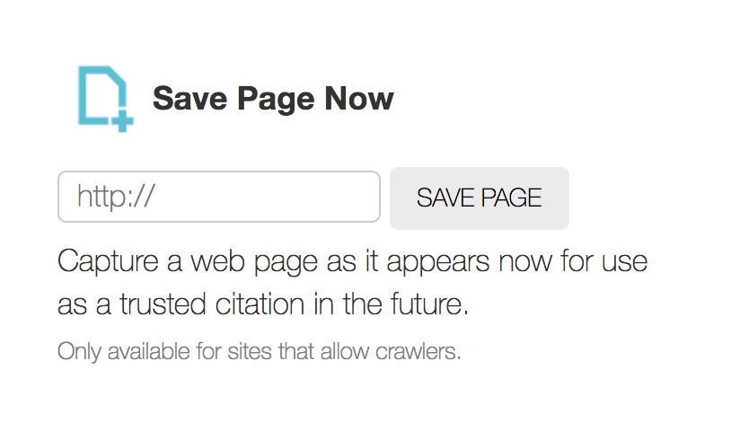

Web Archiving and Art History
Archive-It is the tool most used by libraries and museums to create curated web archives. It offers support, connection to other institutional web archival collections, storage, and an all-in-one functionality.
But what if you’re interested in creating a web archive on your own, your institution can’t afford subscription-based tools, or you simply want to explore what’s out there? Luckily there are many free options for web archiving, many of them also open-source and extensively documented, and you don’t have to be a tech genius to figure them out. You do, however, need to be familiar with the steps taken to archive a website. If you’re brand new to web archiving, check out my process page before diving in on your own.
To explore the viability of these tools, I chose a website already archived by an institution using Archive-It, and compared my freely-acquired results with theirs. The experiments below will give you a just a taste of the possibilities and difficulties in web archiving, and hopefully encourage you to experiment on your own.
NYARC has been archiving the website of the Bortolami Gallery since 2014. Archive-It uses a combination of tools, including brozzler and youtube-dl, to crawl pages and save them as WARC files. Looking at NYARC’s latest capture of the gallery website on March 28th, 2018, it appears that all internal links and files on the site have been captured. The pages for each artist are accessible, and the PDFs attached can be downloaded.
It stops short of saving their social media sites linked to at the bottom of each page, however. This is because Archive-It allows you to have control over scoping - it appears the archivist decided to not save those pages in this particular instance.
Of course, the easiest way to get involved is to contribute to existing web archives. The Internet Archive offers the “save page now” button that allow you to activate a crawl with one click.
You can also save pages to the Wayback Machine using their:
The downsides?